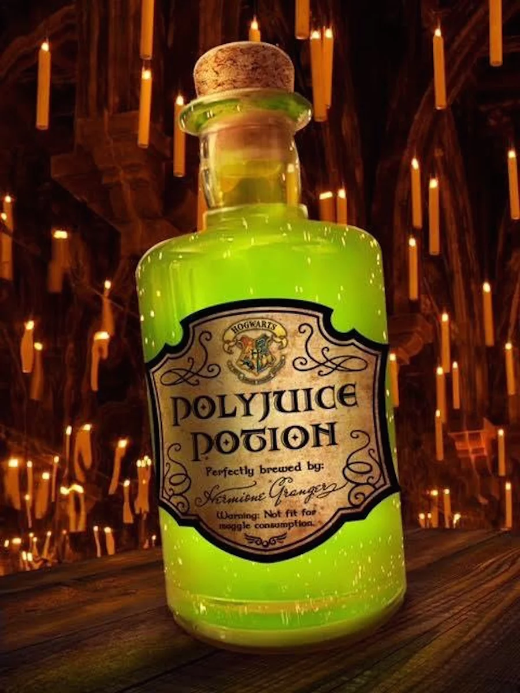

"Polyjuice Potion is a potion that allows the drinker to temporarily transform into
another person. It is described as a thick, greenish-brown liquid that has a strong,
unpleasant taste. The potion is made by mixing the hair, fingernails, and a drop of
blood from the person you want to transform into with a potion. Once the potion is
consumed, the drinker will transform into the person whose DNA material was used
to make the potion."
Ingredients:
- 28 ounces of lime sherbet, plus more for topping (optional)
- 2L of Sprite
- 2L of ginger ale
- green food coloring
- whipped cream, for topping (optional)
Steps:
- In a large punch bowl or drink dispenser with spigot, scoop in lime sherbet.
If desired, reserve some for topping glasses.
- Slowly pour in Sprite and ginger ale. If drink gets too foamy, give it a quick
stir – this should help break up the foam.
- Check the color of the drink. If desired, add a few drops of food coloring to
give it a nice green hue, then stir.
- Serve immediately with more lime sherbet or whipped cream on top (both optional).
Back to the top of the page
Back to the main page
Previous recipe: Butterbear
Next recipe: Harry's Birthday Cake